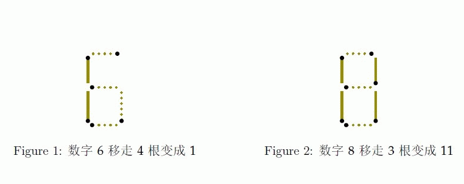
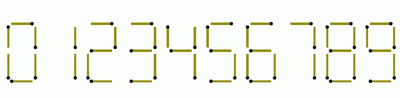
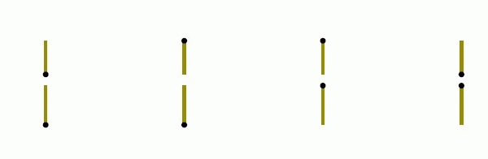

Fish是一条生活在海里的鱼，有一天他很无聊，于是他去捡了人类扔进海里的垃圾，打算用这些来玩些什么。他从捡回来的垃圾堆里找到了不少火柴棍，便把这些火柴棍拼成了一个长度为n 的十进制数，每个数字的拼法如下图所示
注意：每个数字占据的宽度和摆放方式是固定的，故以下情况均不合法。


拼完之后他好累，感觉再也不会拼了。
他对拼出来的数大小不满意，希望通过移动一些火柴棍的位置来把这个数变得尽量大。由于太累，他只能最多移动k 根火柴棍。而且由于数字的最低位放在墙边，他不能在该数的低位后面添加数字，但他可以在该数的前面添加数字。
你能帮他算出他移动火柴棍之后的数最大能是多大吗？
注意：火柴棍对于Fish 来说是很贵重的物品，所以不允许折断或丢弃火柴棍。
注意：火柴头的方向不影响数字的辨识，例如下面几种情况都是数字1
